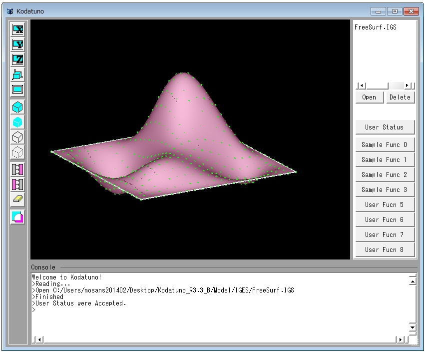
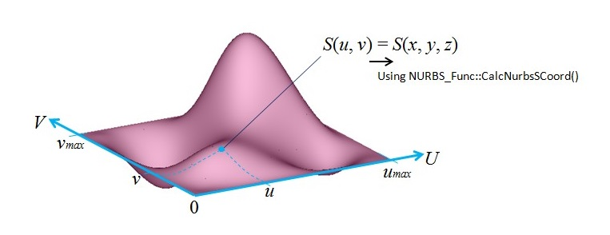

(Ex. 5) NURBS曲面を指定した分割数で分割した点を生成する
この例題は2.6.3 NURBS曲線を指定した分割数で分割した点を生成するの曲面バージョンです．
"SampleFunc1.cpp"のSmpUVDivLine()を実行します．
＜実行手順＞
- Kodatunoアプリケーションを起動し, 適当なIGESデータを1つ読み込みます．
- 表示されたBodyから面をピックします．ピックする面の数は1個にしてください．
- "User Status"からMode5を選択し，Prop1にU方向分割数，Prop2にV方向分割数を整数で入力します．
- "Sample Func 1"ボタンを押します．
- 選択した面上に分割点が生成されたことを確認してください．

＜ソース解説＞
今回はMode5を選択し，"Sample Func1"ボタンを押しました．これによってSmpUVDiveLine()が実行されます．
では，SmpUVDiveLine()を見てみましょう．
// Sample5: 曲面のUVパラメータで等間隔に分割した点を生成する
int SmpUVDivLine(BODYList *BodyList,OBJECTList *ObjList, int PickCount, double Prop[])
{
if(!PickCount) return KOD_ERR; // セレクションされていなかったら、何もしない
NURBS_Func nfunc; // NURBSを扱う関数集を呼び出す
double green[3] = {0,1,0}; // 点表示の色(緑)
OBJECT *obj = (OBJECT *)ObjList->getData(0); // 一番最初にセレクションされたエンティティの情報を得る
BODY *body = (BODY *)BodyList->getData(obj->Body); // 一番最初にセレクションされたBODYの実体を得る
// 本来であれば，Sample4に示した曲面のタイプによる条件分岐が必要であるが，これ以降のSampleではトリム面で決め打ちする
if(obj->Type != _TRIMMED_SURFACE) return KOD_ERR;
NURBSS *S = body->TrmS[obj->Num].pts; // BODYからNURBS曲面を取り出す
int u_divnum = (int)Prop[0]; // ユーザーステータスのprop1をu方向分割数として読み込み
int v_divnum = (int)Prop[1]; // ユーザーステータスのprop2をv方向分割数として読み込み
double u_val = (S->U[1] - S->U[0])/u_divnum; // パラメトリック空間内でのu方向線分長を得る
double v_val = (S->V[1] - S->V[0])/v_divnum; // パラメトリック空間内でのv方向線分長を得る
// u方向，v方向の各分割点における座標値を求める
for(int i=0;i<=u_divnum;i++){
for(int j=0;j<=v_divnum;j++){
Coord P = nfunc.CalcNurbsSCoord(S,S->U[0]+u_val*i,S->V[0]+v_val*j); // 指定した(u,v)の座標値を求める
DrawPoint(P,1,3,green); // 描画
}
}
return KOD_TRUE;
}
4〜15行目まではこれまでの例題と同じですので，説明を省略します．17行目から見ていきましょう．
17，18行目では"User Status"のProp1，Prop2で入力したU方向V方向それぞれの分割数の値を取り出していきます．
次に19，20行目ですが，これを理解するためには，NURBS曲面の知識が若干必要になります．(EX.3)の冒頭で，NURBS
曲線/曲面を定義した構造体の変数は，Kodatunoモジュールを使う際，気にしなくてもよいようになっていると述べましたが，
本例題ではあえてその一部を解説し，Kodatunoモジュール自体の理解へとつなげたいと思います．
(EX.3)で少しだけ触れましたが，NURBSはパラメータを媒介した表現になっています．下図を参照してください．

この図ではU-V座標系上の0-u_MAX，0-v_MAXの範囲でNURBS曲面が存在しており，その範囲内におけるある座標値(u,v)は，
3次元空間における曲面上の点(x､y､z)に対応しています．(u,v)から(x,y,z)への変換は，(Ex.4)で示した
NURBS_unk::CalcNurbsSCord()によって行うことができます．NURBS曲面が存在する範囲は，そのNURBS曲線/曲面を作成した
CADソフト等によってまちまちで，決まりはありません．上の図では0からスタートしていますが，0でない場合も当然あり
ますので，正確にはu_min，v_minが存在し，今回はたまたま両方とも0だったということになります．
KodatunoにおいてNURBS曲面を表す構造体NURBSSで，曲面の存在範囲を格納している変数がU[2]とV[2]です(BODY.h
138，139行目)．U[0]にu_minが，U[1]にu_maxが格納されています．Vに関しても同様です．(ちなみにNURBS曲線の場合は
BODY.h119行目のV[2]の1つになります．)
ここでようやくソースに戻ります．ソースの19行目は，u_maxからu=minを引いて，指定した分割数で割っています．つまり，
NURBS曲面のパラメータ座標上で等分割したときの区間長さを求めています．20行目は同様にv方向についての区間長さを
求めています．そして23行目から28行目にかけて，U,V両方向の分割点を求め，3次元空間上の座標に変換しています．
以上で(Ex.5)の解説は終了ですが，19〜28行目の一連のNURBSS構造体の変数を利用した分割点算出は，実は1つの関数として
Kodatunoモジュールに実装されています．
それがNURBS_Func::CalcDeltaPtsOnNurbsS()です．19〜28行目はこの関数によって1行に置き換えることができます．実際
に"NURBS_Func.cpp"の4193行目をご覧ください．NURBS Func::CalcDeltaPtsOnNurbsS()の実体が記述されていますが，例題の
19〜28行目となんら変わっていないことがわかると思います．
次はNURBS曲面と平面との干渉を扱った例題になります．